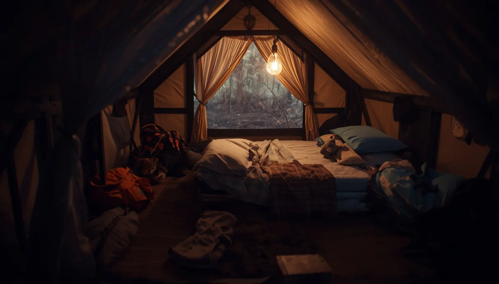

Excursiones y pernoctas sin miedo
La llegada de campamentos, excursiones o pernoctas escolares suele despertar inquietud en las familias y temor en los niños que experimentan enuresis nocturna. Sin embargo, dormir fuera de casa representa un hito fundamental en su desarrollo social y no debe convertirse jamás en un motivo de exclusión o renuncia a estas vivencias enriquecedoras.
Planificación discreta y naturalidad
Preparar la maleta de forma autónoma pero supervisada, incluyendo ropa interior absorbente desechable y bolsas discretas para gestionar la intimidad del cambio matutino, otorga una gran seguridad al menor. Hablar con los docentes de confianza de manera natural asegura una complicidad respetuosa que protege su privacidad ante el grupo.
"Ningún niño debe perderse la magia de una acampada con amigos por el miedo a una noche húmeda; con la logística adecuada, la aventura está garantizada."
Fomentando su autoconfianza fuera del hogar
Reforzar su capacidad para resolver situaciones cotidianas de manera independiente fortalece su autoestima social. Al comprobar que saben gestionar el proceso con discreción y naturalidad, los temores iniciales se desvanecen, permitiéndoles disfrutar plenamente de sus compañeros.
Alianzas con el profesorado
Mantener una comunicación fluida y confidencial con los maestros a cargo garantiza que cualquier imprevisto se resuelva con total discreción y empatía, salvaguardando el bienestar emocional del alumno en todo momento.
➔ Volver al índice de enuresis nocturna